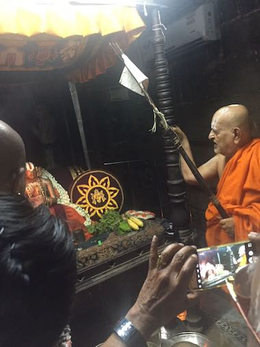
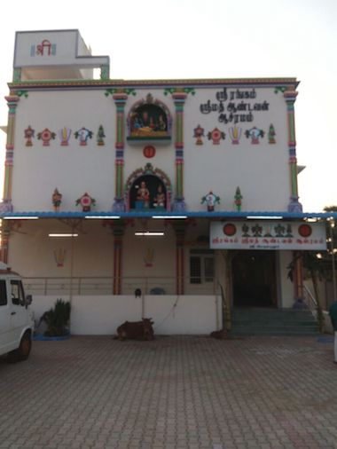
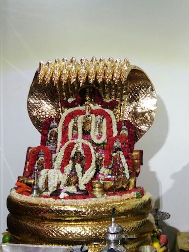
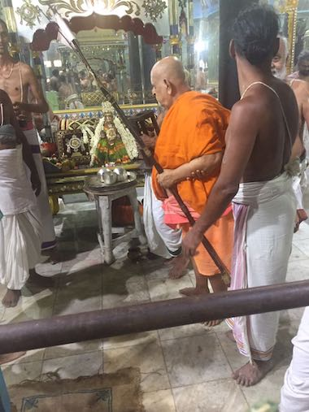

Sri: Srimathe RangaRamanuja Mahadesikaya Namaha Srimathe Srinivasa Ramanuja Mahadesikaya Namaha Srimathe Vedantha Ramanuja Mahadesikaya Namaha Srimathe Srinivasa Mahadesikaya Namaha Srimathe Nigamantha Mahadesikaya Namaha Srimathe Bhagavathe Bhashyakaraaya Mahadesikaya Namaha Sri Ranganatha Parabrahmane Namaha Sri Ranganatha Divyamani Padhukabhyam Namaha Latest Photos from the Ashramam: View latest photos from the Ashramam.View Photos Sathabhisheka Mahotsavam took place in Srirangam on 21st May 2015Read More Sri Ranganatha Paduka Vidyala Trust: The trust is responsible for running the Veda Patasala and Srimath Andavan Arts and Science CollegeRead More Srimath Andavan Arts and Science College: Founded by Srimath Andavan, we offer 13 undergraduate and 11 post graduate courses, 7 M.Phil and 9 Ph.D programmes.Contact Read More Sri Ramanuja Mission of USA: Ramanuja Mission represents our Ashramam interests in the USA. New Jersey Ashramam is project to construct the first international ashramam.Read More about Ramanuja MissionRead More about New Jersey Ashramam Guru Krupa Foundation: Guru Krupa Foundation (GKF) is a private foundation incorporated in New York State in USA. The purpose of the foundation is to fund several charitable causes. These causes may be broadly classified as being (i) Social (ii) Educational or (iii) Religious/Cultural. Contact Read More Social Responsibility Project: Started by Srimath Andavan to foster quality higher education and empower the weaker, rural and oppressed citizens.Read More Srimath Andavan in Sriperumpudur - April 2017    